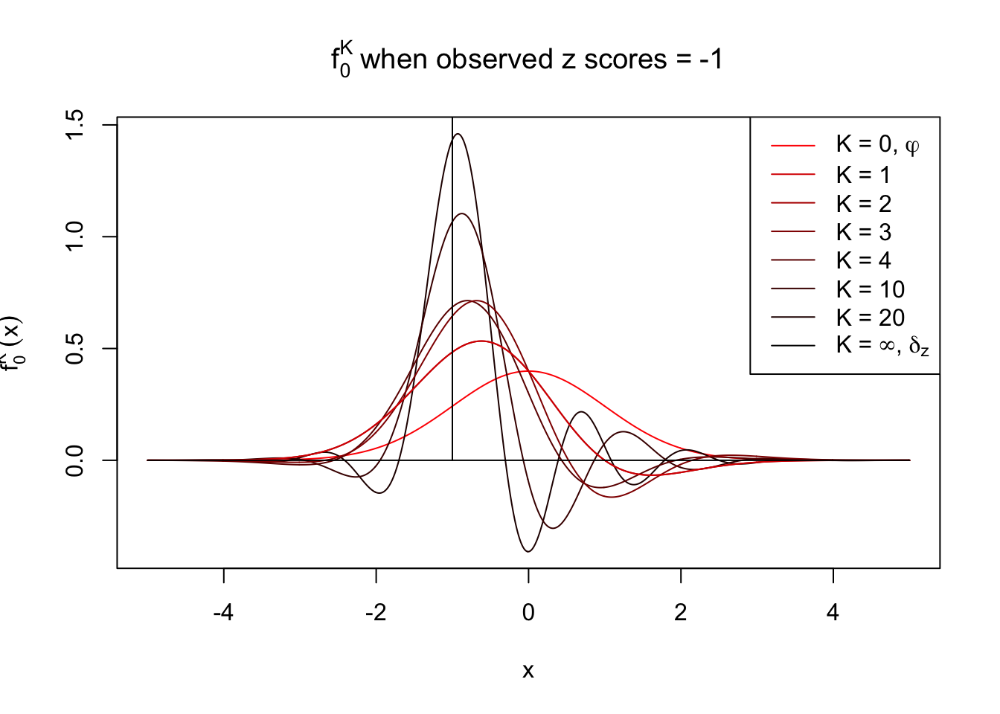
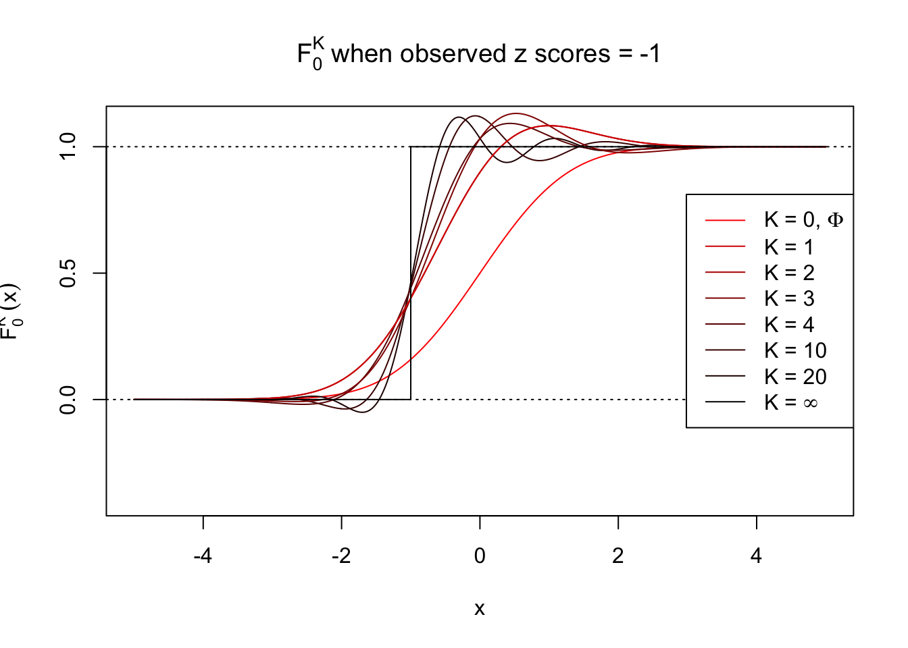
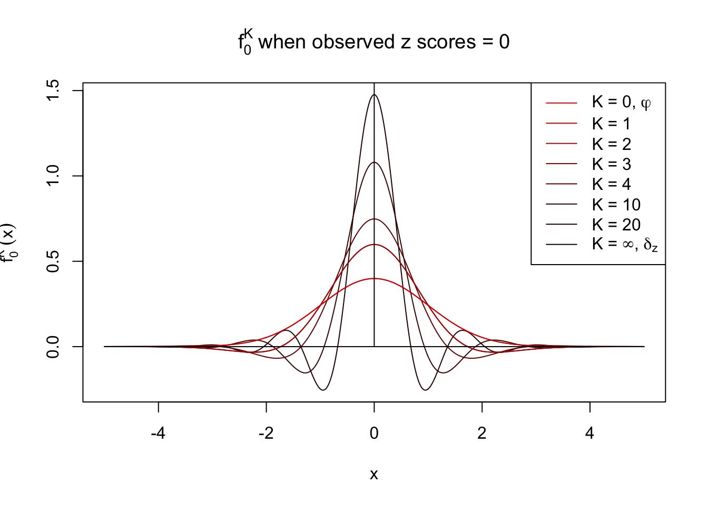
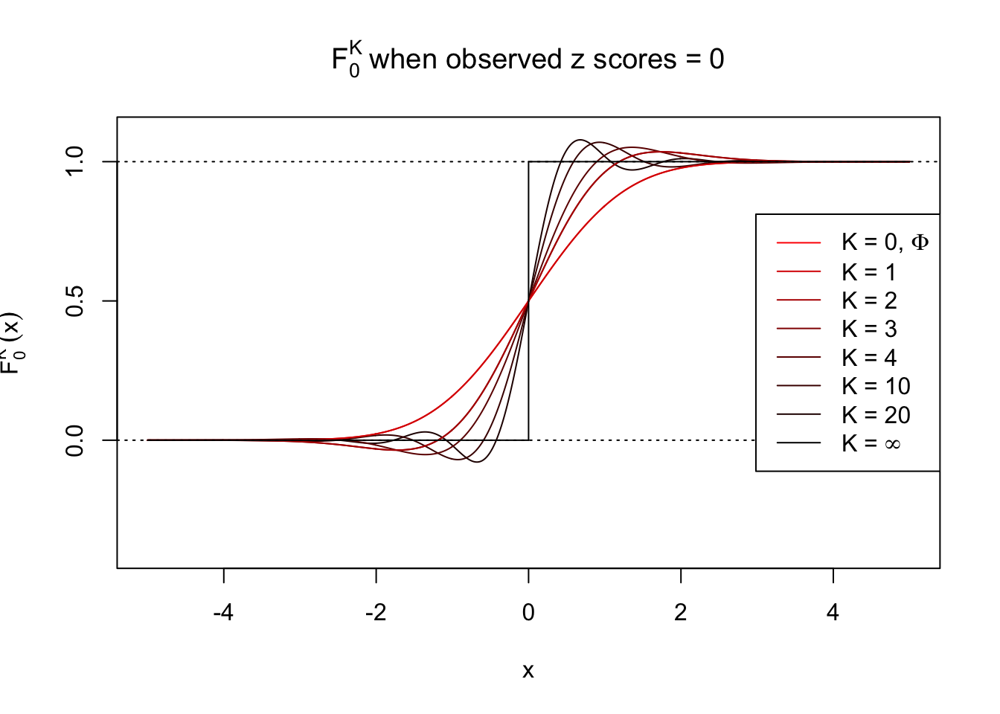
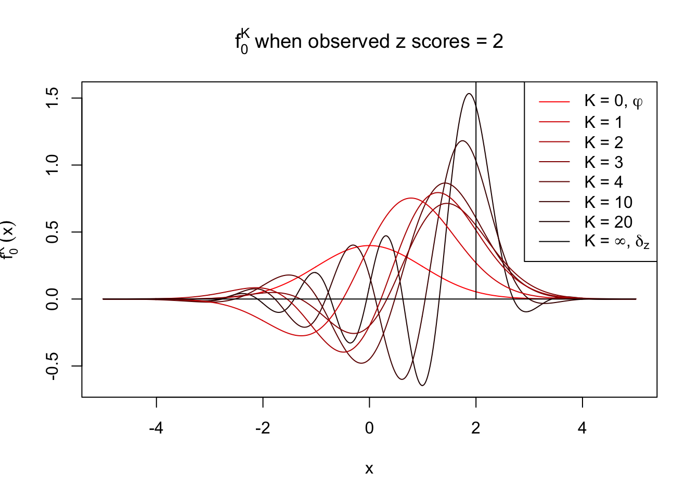
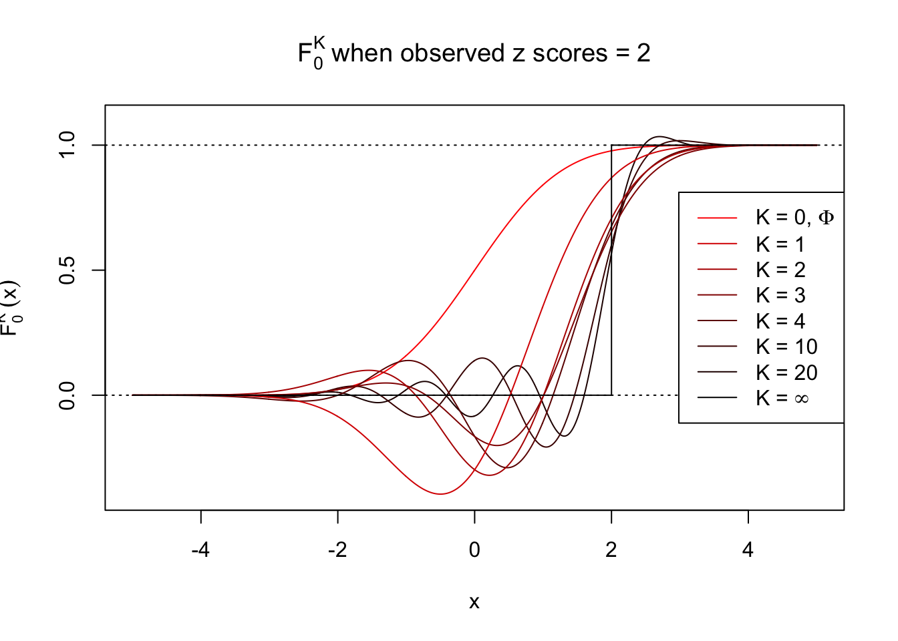
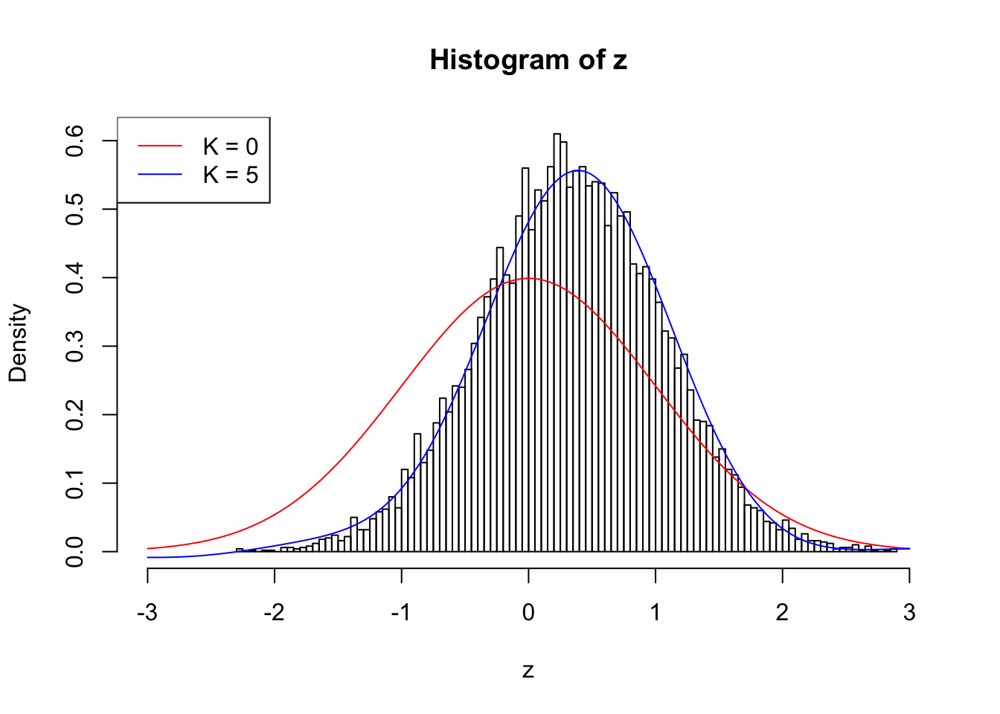
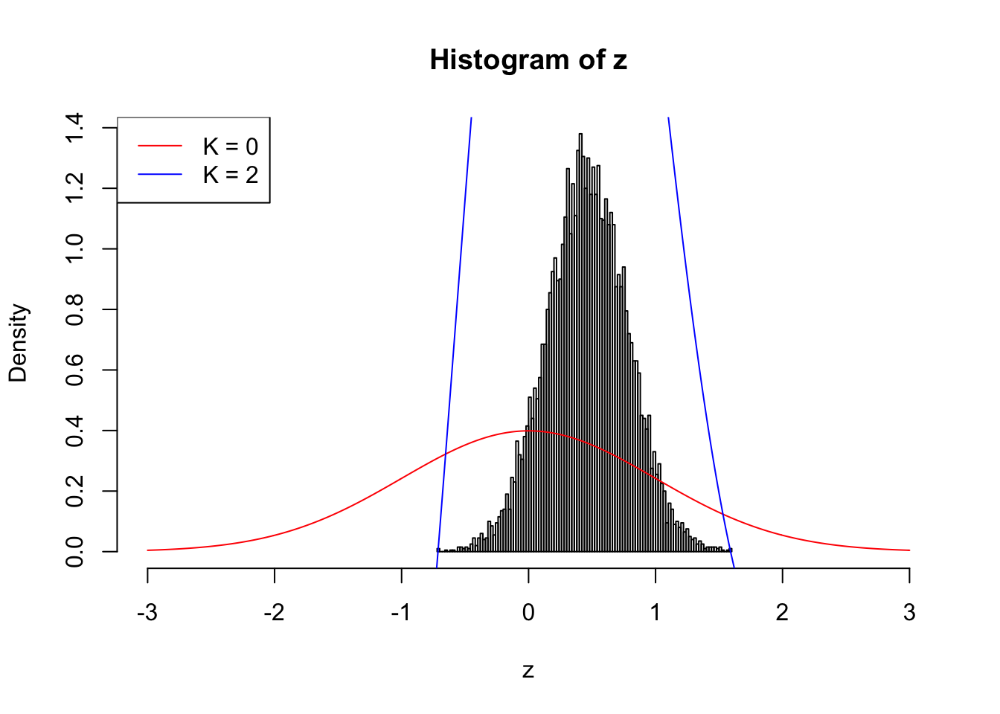

Empirical Null with Gaussian Derivatives: Large Correlation
Lei Sun
2017-03-26
Last updated: 2018-05-15
workflowr checks: (Click a bullet for more information)-
✔ R Markdown file: up-to-date
Great! Since the R Markdown file has been committed to the Git repository, you know the exact version of the code that produced these results.
-
✔ Environment: empty
Great job! The global environment was empty. Objects defined in the global environment can affect the analysis in your R Markdown file in unknown ways. For reproduciblity it’s best to always run the code in an empty environment.
-
✔ Seed:
set.seed(12345)The command
set.seed(12345)was run prior to running the code in the R Markdown file. Setting a seed ensures that any results that rely on randomness, e.g. subsampling or permutations, are reproducible. -
✔ Session information: recorded
Great job! Recording the operating system, R version, and package versions is critical for reproducibility.
-
Great! You are using Git for version control. Tracking code development and connecting the code version to the results is critical for reproducibility. The version displayed above was the version of the Git repository at the time these results were generated.✔ Repository version: 388e65e
Note that you need to be careful to ensure that all relevant files for the analysis have been committed to Git prior to generating the results (you can usewflow_publishorwflow_git_commit). workflowr only checks the R Markdown file, but you know if there are other scripts or data files that it depends on. Below is the status of the Git repository when the results were generated:
Note that any generated files, e.g. HTML, png, CSS, etc., are not included in this status report because it is ok for generated content to have uncommitted changes.Ignored files: Ignored: .DS_Store Ignored: .Rhistory Ignored: .Rproj.user/ Ignored: analysis/.DS_Store Ignored: analysis/BH_robustness_cache/ Ignored: analysis/FDR_Null_cache/ Ignored: analysis/FDR_null_betahat_cache/ Ignored: analysis/Rmosek_cache/ Ignored: analysis/StepDown_cache/ Ignored: analysis/alternative2_cache/ Ignored: analysis/alternative_cache/ Ignored: analysis/ash_gd_cache/ Ignored: analysis/average_cor_gtex_2_cache/ Ignored: analysis/average_cor_gtex_cache/ Ignored: analysis/brca_cache/ Ignored: analysis/cash_deconv_cache/ Ignored: analysis/cash_fdr_1_cache/ Ignored: analysis/cash_fdr_2_cache/ Ignored: analysis/cash_fdr_3_cache/ Ignored: analysis/cash_fdr_4_cache/ Ignored: analysis/cash_fdr_5_cache/ Ignored: analysis/cash_fdr_6_cache/ Ignored: analysis/cash_plots_cache/ Ignored: analysis/cash_sim_1_cache/ Ignored: analysis/cash_sim_2_cache/ Ignored: analysis/cash_sim_3_cache/ Ignored: analysis/cash_sim_4_cache/ Ignored: analysis/cash_sim_5_cache/ Ignored: analysis/cash_sim_6_cache/ Ignored: analysis/cash_sim_7_cache/ Ignored: analysis/correlated_z_2_cache/ Ignored: analysis/correlated_z_3_cache/ Ignored: analysis/correlated_z_cache/ Ignored: analysis/create_null_cache/ Ignored: analysis/cutoff_null_cache/ Ignored: analysis/design_matrix_2_cache/ Ignored: analysis/design_matrix_cache/ Ignored: analysis/diagnostic_ash_cache/ Ignored: analysis/diagnostic_correlated_z_2_cache/ Ignored: analysis/diagnostic_correlated_z_3_cache/ Ignored: analysis/diagnostic_correlated_z_cache/ Ignored: analysis/diagnostic_plot_2_cache/ Ignored: analysis/diagnostic_plot_cache/ Ignored: analysis/efron_leukemia_cache/ Ignored: analysis/fitting_normal_cache/ Ignored: analysis/gaussian_derivatives_2_cache/ Ignored: analysis/gaussian_derivatives_3_cache/ Ignored: analysis/gaussian_derivatives_4_cache/ Ignored: analysis/gaussian_derivatives_5_cache/ Ignored: analysis/gaussian_derivatives_cache/ Ignored: analysis/gd-ash_cache/ Ignored: analysis/gd_delta_cache/ Ignored: analysis/gd_lik_2_cache/ Ignored: analysis/gd_lik_cache/ Ignored: analysis/gd_w_cache/ Ignored: analysis/knockoff_10_cache/ Ignored: analysis/knockoff_2_cache/ Ignored: analysis/knockoff_3_cache/ Ignored: analysis/knockoff_4_cache/ Ignored: analysis/knockoff_5_cache/ Ignored: analysis/knockoff_6_cache/ Ignored: analysis/knockoff_7_cache/ Ignored: analysis/knockoff_8_cache/ Ignored: analysis/knockoff_9_cache/ Ignored: analysis/knockoff_cache/ Ignored: analysis/knockoff_var_cache/ Ignored: analysis/marginal_z_alternative_cache/ Ignored: analysis/marginal_z_cache/ Ignored: analysis/mosek_reg_2_cache/ Ignored: analysis/mosek_reg_4_cache/ Ignored: analysis/mosek_reg_5_cache/ Ignored: analysis/mosek_reg_6_cache/ Ignored: analysis/mosek_reg_cache/ Ignored: analysis/pihat0_null_cache/ Ignored: analysis/plot_diagnostic_cache/ Ignored: analysis/poster_obayes17_cache/ Ignored: analysis/real_data_simulation_2_cache/ Ignored: analysis/real_data_simulation_3_cache/ Ignored: analysis/real_data_simulation_4_cache/ Ignored: analysis/real_data_simulation_5_cache/ Ignored: analysis/real_data_simulation_cache/ Ignored: analysis/rmosek_primal_dual_2_cache/ Ignored: analysis/rmosek_primal_dual_cache/ Ignored: analysis/seqgendiff_cache/ Ignored: analysis/simulated_correlated_null_2_cache/ Ignored: analysis/simulated_correlated_null_3_cache/ Ignored: analysis/simulated_correlated_null_cache/ Ignored: analysis/simulation_real_se_2_cache/ Ignored: analysis/simulation_real_se_cache/ Ignored: analysis/smemo_2_cache/ Ignored: data/LSI/ Ignored: docs/.DS_Store Ignored: docs/figure/.DS_Store Ignored: output/fig/
Expand here to see past versions:
| File | Version | Author | Date | Message |
|---|---|---|---|---|
| html | e05bc83 | LSun | 2018-05-12 | Update to 1.0 |
| rmd | cc0ab83 | Lei Sun | 2018-05-11 | update |
| html | 0f36d99 | LSun | 2017-12-21 | Build site. |
| html | 853a484 | LSun | 2017-11-07 | Build site. |
| html | 6639968 | LSun | 2017-11-05 | transfer |
| rmd | 7344c2d | LSun | 2017-03-30 | constraints |
| html | 7344c2d | LSun | 2017-03-30 | constraints |
| rmd | 5bd5d70 | LSun | 2017-03-28 | revision |
| html | 5bd5d70 | LSun | 2017-03-28 | revision |
| rmd | c803b43 | LSun | 2017-03-27 | fitting and write-up |
| html | c803b43 | LSun | 2017-03-27 | fitting and write-up |
Can \(K\) be too small?
Another assumption to make the problem tractable is that the pairwise correlation \(\rho_{ij}\) is moderate enough so \(W_k\varphi^{(k)}\) vanishes as the order \(k\) increases. With this assumption we can stop at a sufficiently large \(K\) without consideration higher order Gaussian derivatives. But what if \(\rho_{ij}\) is large?
Extreme case: \(\rho_{ij} \equiv 1\)
When we have perfect correlation among all \(z\) scores, the approximate limit observed density \(f_0(x)\to\delta_z(x) = \delta(x-z)\). That is, with probability one, we observe \(z_1 = \cdots = z_n = z\), as \(n\to\infty\), \(f_0(x)\) goes to a Dirac delta function peak at the observed \(z\), and zero elsewhere. Now the question is, can this Dirac delta function be decomposed with the Gaussian \(\varphi\) and its derivatives \(\varphi^{(k)}\), so that we still have
\[ f_0(x) = \delta(x - z) = \varphi(x)\sum\limits_{k = 0}^\infty W_kh_k(x) \] with appropriate \(W_k\)’s?
Using the orthogonality of Hermite functions, we have
\[ W_k = \frac{1}{k!}\int_{-\infty}^{\infty}h_k(x)f_0(x)dx = \frac{1}{k!}\int_{-\infty}^{\infty}h_k(x)\delta(x-z)dx = \frac{1}{k!}h_k(z) \] Now the decomposition \(\varphi(x)\sum\limits_{k = 0}^\infty W_kh_k(x)\) becomes
\[ \varphi(x)\sum\limits_{k = 0}^\infty \frac{1}{k!}h_k(z)h_k(x) \] It turns out this equation is connected to Mehler’s formula which can be shown to give the identity
\[ \sum\limits_{k = 0}^\infty \psi_k(x)\psi_k(z) = \delta(x - z) \] where \(\psi_k\)’s are the Hermite functions defined as
\[ \begin{array}{rrcl} & \psi_k(x) &=& (k!)^{-1/2}(\sqrt{\pi})^{-1/2}e^{-x^2/2}h_k(\sqrt{2}x)\\ \Rightarrow & h_k(x) &=& (k!)^{1/2}(\sqrt{\pi})^{1/2}e^{x^2/4}\psi_k\left(\frac x{\sqrt{2}}\right)\\ \Rightarrow & \varphi(x)\sum\limits_{k = 0}^\infty \frac{1}{k!}h_k(z)h_k(x) & =& \frac1{\sqrt{2}}e^{-\frac{x^2}4+\frac{z^2}4}\sum\limits_{k = 0}^\infty \psi_k\left(\frac x{\sqrt{2}}\right)\psi_k\left(\frac z{\sqrt{2}}\right)\\ & &=& \frac1{\sqrt{2}}e^{-\frac{x^2}4+\frac{z^2}4} \delta\left(\frac{x - z}{\sqrt{2}}\right) \end{array} \] Note that the Dirac delta function has a property that \(\delta(\alpha x) = \delta(x) / |\alpha| \Rightarrow \frac1{\sqrt{2}}\delta\left(\frac{x - z}{\sqrt{2}}\right) = \delta(x - z)\). Therefore,
\[ \varphi(x)\sum\limits_{k = 0}^\infty \frac{1}{k!}h_k(z)h_k(x) = \delta(x-z)\exp\left(-\frac{x^2}4+\frac{z^2}4\right) \] Note that \(\exp\left(-\frac{x^2}4+\frac{z^2}4\right)\) is bounded for any \(z\in\mathbb{R}\), so \(\delta(x-z)\exp\left(-\frac{x^2}4+\frac{z^2}4\right)\) vanishes to \(0\) for any \(x\neq z\), and
\[ \int_{-\infty}^\infty \delta(x-z)\exp\left(-\frac{x^2}4+\frac{z^2}4\right)dx = \exp\left(-\frac{z^2}4+\frac{z^2}4\right) = 1 \] Hence, in essence, \(\delta(x-z)\exp\left(-\frac{x^2}4+\frac{z^2}4\right) = \delta(x-z)\). Therefore we have \[ f_0(x) = \varphi(x)\sum\limits_{k = 0}^\infty W_kh_k(x) = \varphi(x)\sum\limits_{k = 0}^\infty \frac{1}{k!}h_k(z)h_k(x) =\delta(x -z) \] when \[ W_k = \frac{1}{k!}h_k(z) \] Thus we show that the Dirac delta function can be decomposed by Gaussian density and its derivatives.
Visualization with finite \(K\)
With Gaussian and its infinite orders of derivatives, we can compose a Dirac delta function at any position, yet what happens if we stop at a finite \(K\)? Let \(f_0^K\) be the approximation of \(f_0 = \delta_z\) with first \(K\) Gaussian derivatives. That is,
\[ f_0^K(x) = \varphi(x)\sum\limits_{k = 0}^K \frac{1}{k!}h_k(z)h_k(x) \ . \] Meanwhile, let \(F_0^K(x) = \int_{-\infty}^x f_0^K(u)du\). It’s easy to shown that
\[ F_0^K(x) = \Phi(x) - \varphi(x)\sum\limits_{k = 1}^K W_k h_{k - 1}(x) = \Phi(x) - \varphi(x) \sum\limits_{k = 1}^K \frac{1}{k!}h_k(z) h_{k - 1}(x) \ . \]
Theoretically, \(f_0^K\) is an approximation to empirical density of perfectly correlated \(z\) scores; hence, as \(K\to\infty\), \(f_0^K\to\delta_z\). Similarly, \(F_0^K\) is an approximation to empirical cdf of perfectly correlated \(z\) scores; hence, as \(K\to\infty\), \(f_0^K\) should converge to the \(0\)-\(1\) step function, and the location of the step is the observed \(z\).
In practice, the convergence is not fast. As we can see from the following visualization, the difference between \(f_0^K\) and \(\delta_z\), as well as that between \(F_0^K\) and the step function, is still conspicuous even if \(K = 20\), which is about the highest order R can reasonbly handle in the current implementation. Therefore, at least in theory it’s possible that \(K\) can be too small.
Note that the oscillation near the presumptive step may be connected with Gibbs phenomenon.
Under perfect correlation, observed z scores = -1 
Under perfect correlation, observed z scores = 0 
Under perfect correlation, observed z scores = 2 
Fitting experiments when \(\rho_{ij}\) is large
As previous theoretical result indicates, when \(\rho\) is large, a large \(K\) is probably needed. However, on the other hand, when \(\rho\) is large, the effective sample size is small. Indeed when \(\rho\equiv1\), the sample size is essentially \(1\).
Let’s take a look at some examples with pairwise correlations of \(z\) scores \(\rho_{ij}\equiv\rho\), \(\rho\) moderate to high. Such \(z\) scores can be simulated as \(z_i = \epsilon\sqrt{\rho} + e_i\sqrt{1-\rho}\), where \(\epsilon, e_i\) are iid \(N(0, 1)\).
n = 1e4
rho = 0.5
set.seed(777)
z = rnorm(1) * sqrt(rho) + rnorm(n) * sqrt(1 - rho)source("../code/ecdfz.R")
fit.ecdfz = ecdfz.optimal(z)When \(\rho = 0.5\), current implementation with \(K = 5\) fits positively correlationed z scores reasonably well.
10000 z scores with pairwise correlation = 0.5
However, as \(\rho\) gets larger, current implementation usually fails to find a good \(K\) before the algorithm goes unstable, as illustrated in the following \(\rho = 0.7\) plot. \(K = 3\) is obviously not enough, yet \(K = 4\) has already gone wildly unstable.
n = 1e4
rho = 0.7
set.seed(777)
z = rnorm(1) * sqrt(rho) + rnorm(n) * sqrt(1 - rho)source("../code/ecdfz.R")
fit.ecdfz = ecdfz.optimal(z)10000 z scores with pairwise correlation = 0.7
When \(\rho = 0.9\), the observed \(z\) scores are so concentrated in a small range, even if we have \(10,000\) of them, making the effective sample size hopelessly small. Current implementation can’t even handle this data set; it goes crazy when \(K = 2\).
n = 1e4
rho = 0.9
set.seed(777)
z = rnorm(1) * sqrt(rho) + rnorm(n) * sqrt(1 - rho)source("../code/ecdfz.R")
fit.ecdfz = ecdfz(z, 2)10000 z scores with pairwise correlation = 0.9
Session information
sessionInfo()R version 3.4.3 (2017-11-30)
Platform: x86_64-apple-darwin15.6.0 (64-bit)
Running under: macOS High Sierra 10.13.4
Matrix products: default
BLAS: /Library/Frameworks/R.framework/Versions/3.4/Resources/lib/libRblas.0.dylib
LAPACK: /Library/Frameworks/R.framework/Versions/3.4/Resources/lib/libRlapack.dylib
locale:
[1] en_US.UTF-8/en_US.UTF-8/en_US.UTF-8/C/en_US.UTF-8/en_US.UTF-8
attached base packages:
[1] stats graphics grDevices utils datasets methods base
loaded via a namespace (and not attached):
[1] workflowr_1.0.1 Rcpp_0.12.16 digest_0.6.15
[4] rprojroot_1.3-2 R.methodsS3_1.7.1 backports_1.1.2
[7] git2r_0.21.0 magrittr_1.5 evaluate_0.10.1
[10] stringi_1.1.6 whisker_0.3-2 R.oo_1.21.0
[13] R.utils_2.6.0 rmarkdown_1.9 tools_3.4.3
[16] stringr_1.3.0 yaml_2.1.18 compiler_3.4.3
[19] htmltools_0.3.6 knitr_1.20 This reproducible R Markdown analysis was created with workflowr 1.0.1